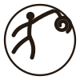

Wersja podstawowa (gradient)
Wersja na ciemnym tle

Wersja jednokolorowa (haft / grawer)
Na akcencie kolorystycznym
Spirala pary unoszącej się znad rozgrzanych kamieni, zamknięta w pierścieniu — odniesienie do Aufguss i idei „świata" (world). Forma jest na tyle prosta, że działa w jednym kolorze: do haftu na szlafrokach, grawerunku na kubkach, czy druku na hamamach.

Do nagłówka strony, stopki, materiałów dla obiektów.
Poglądowo — jak znak zachowuje się na gadżetach i materiałach obiektów.